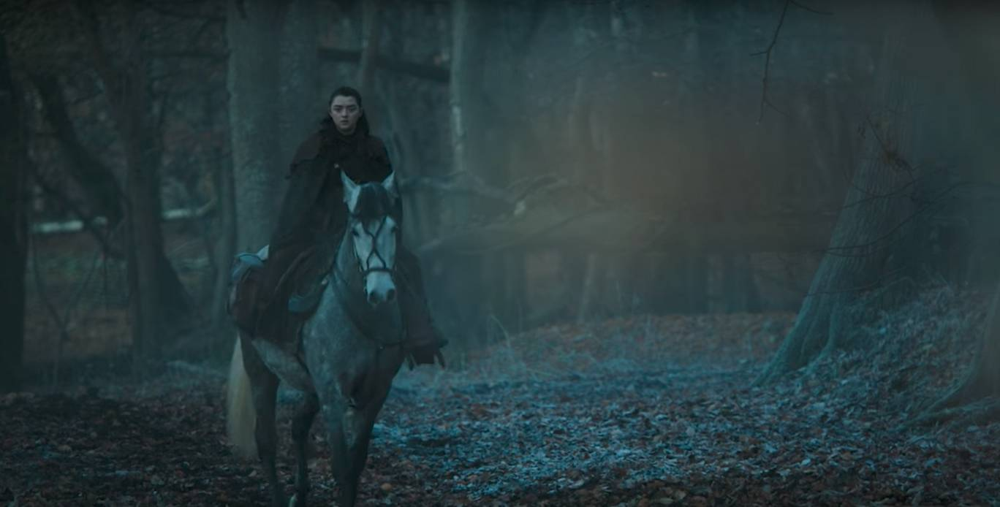
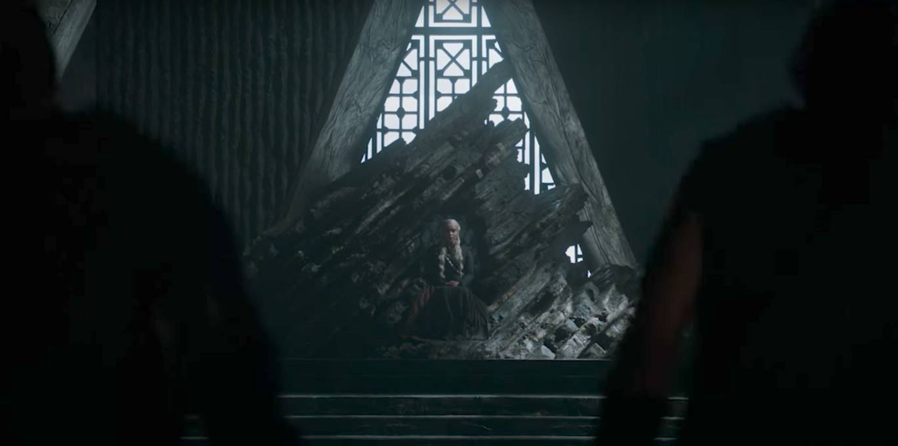
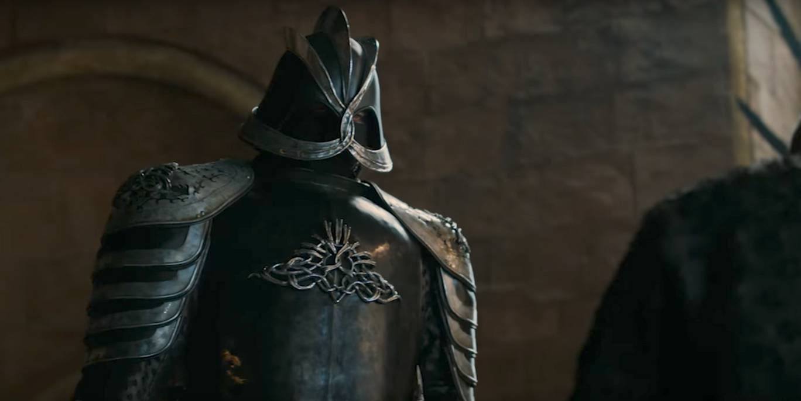
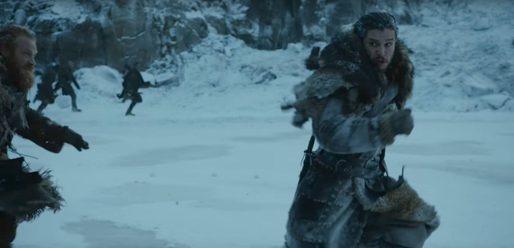

Often, when actors talk about social media, they criticise certain platforms, citing the abuse they receive from nameless trolls on Twitter and Facebook.
"The Internet is always frowned upon," Maisie Williams told The Sunday Times when asked the Internet. "People always make it out to be a negative place.”
However, unlike those naysayers, the Game of Thrones actor believes being online has actually helped bring about kindness and understanding.
“Because of the internet, my generation is the most accepting that there has ever been,” she said. "We understand each other, we give each other the time of day and don't segregate people because they're different."
Questioned about ever prevalent trolls, AKA people who harass and berate others online, she said: "That's really a small minority.”
   Williams was also questioned about being thrust into the limelight aged 12 as Game of Thrones took off: "At 12 I was fearless and didn't care, so I really enjoyed it.
"But then as each season passed, the pressure built and it became a little destructive. Everyone goes through a dip in confidence. That also came with puberty.
"It all fizzled out a bit and I lost my confidence and now I'm slowly starting to get it back again.
Game of Thrones returns on the 17 July. Read everything we know about the upcoming season here.